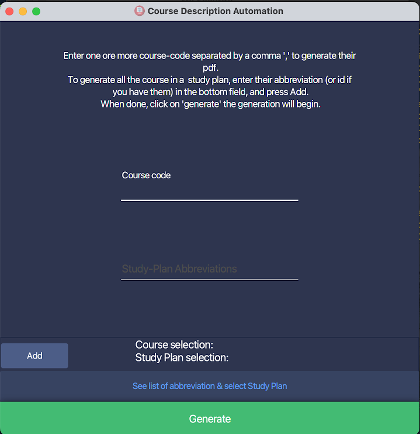

Guide d'utilisation (Manuel FR)
Installation
Dépendences
Avant de lancer notre logiciel, il faut d'abord télécharger un programme nécessaire à son bon fonctionnement. Il s'appel 'wkhtmltopdf'. (Son utilité est assez explicite).
Pour ce faire il vous faut cliquer sur ce lien: https://github.com/wkhtmltopdf/packaging/releases/download/0.12.6-2/wkhtmltox-0.12.6-2.macos-cocoa.pkg (cela va ouvrire votre navigateur et directement télécharger l'installeur.)
Une fois téléchargé double cliquez sur le fichier.
Si vous voyez un message d'erreur qui ressemble à

Il vous faudra faire un clique droit sur le fichier, appuyer sur
"ouvrir" puis "ouvrir quand même"
(voir https://support.apple.com/guide/mac-help/open-a-mac-app-from-an-unidentified-developer-mh40616/mac
pour plus d'informations)
Vous devriez, désormais, pouvoir installer le programme normalement. (Suivez simplement les instructions d'installation.)
Installation
Maintenant décompresser le fichier .zip fourni dans votre dossier
documents, déplacez-vous-y.
Vous devriez voir les fichiers suivants:
.
├── files/ (dossier)
├── Course-Description-Automation (programme)
├── pdfs/ (dossier)
└── LICENSEdouble cliquez sur le fichier
Course-Description-Automation pour le lancer.
Utilisation
Comme vous pouvez le voir sur l'écran ci-dessous, il y a 2 moyens de générer des pdfs de cours.

Entrer le code des cours 1 par 1 séparé par une virgule dans le champs "Course code".
exemple:11X001,11X002,11X006
Appuyer sur "Add" pour valider votre séléction, puis "Generate" pour lancer la génération.Entrer des "abbréviations" de plans d'études pour générer chaque cours d'un plan d'études.
Pour ce faire, ouvrez le menu de séléction en appuyant sur le bouton "See list of abbreviation & select study plan", cela va ouvrir le menu suivant:
Vous pouvez maintenant simplement double cliquer sur le plan que vous voulez et cela va directement l'ajouter à la sélection. (vous pouvez double-cliquer n'importe où sur la ligne).
Puis appuyer sur Generate quand vous avez fini (pas besoin d'appuyer sur "Add" si vous n'écrivez rien manuellement dans les champs.)Si vous voulez entrer les abbrévations manuellement, cliquer 1 seule fois (au lieu de 2), cela va copier l'abbréviation du plan d'étude que vous pourrez coller ( avec
cmd (⌘)+v) dans le champs "Study-Plan Abbreviations" de l'écran principal. Une fois fait, appuyer sur le boutton "Add" pour valider votre séléction, puis "generate" pour lancer la génération.Une fois que votre séléction (de cour(s) et/ou plan(s) d'études) est validée, elle devrait ressembler à ça:

appuyez sur Generate et c'est tout bon.
Comme vous avez peut-être pu le remarquer sur la 2e image ci-dessus, vous pouvez chercher un plan d'études spécifique en entrant son nom dans la barre de recherche, pour filtrer les résultats.
Si le plan d'étude que vous recherchez n'est pas la liste, vous
pouvez entrer manuellement l'identifiant de la base de donnée de l'unige
qui correspond à ce plan d'étude. (par exemple celui du bachelor en
sciences informatique 2022 est 73710).
Entrez le comme si c'était une abbréviation dans le champs
"Study-Plan Abbreviations", appuyer sur "Add" puis
"Generate".
En cas d'erreur
Si jamais quelque chose ne fonctionne pas, que vous recevez un message d'erreur, ou que vous n'arrivez pas à installer le projet, n'hésitez pas à m'envoyer un mail à noah.munz@etu.unige.ch .
Si pour une quelconque raison mon adresse unige n'est plus valide. J'ai inclus mon addresse personnelle dans la license (munz.no@gmail.com).
Si votre erreur arrive pendant que vous utilisez le
programme (i.e. vous arrivez à le démarrer sans problème). Des rapports
expliquant ce qui se passe quand et comment sont présents dans le
dossier files/res/log, joignez-les à votre mail pour que je
puisse vous assister au mieux.
Structure du dossier du projet
Si tout ce passe bien, vous ne devriez pas avoir besoin de ce que je vais vous dire dans cette section.
J'ai parlé du dossier log dans la section précdente
voici où le trouver:
├── files/
│ └── res/
│ ├── bin-converters/
| |
│ └── log/ (ici)
| .
│ .
| .
|
├── Course-Description-Automation (executable)
├── pdfs
└── LICENSEDans le dossier files puis res.
Si jamais vous un problème et vous voulez vérifier qu'il ne vous
manque aucun fichier pour lancer le programme (il n'y aucune raison
particulière pouquoi cela arriverait mais on ne sait jamais.)
Un schéma comme celui-dessus (mais complet) est présent à structure-projet-github
(sur ce schéma [version] correspond à une version de
fichier e.g. 19.0.1 aucun fichier n'a réellement "version"
dans son nom.)
NB: Une partie importante du projet a été l'optimisation de la vitesse de traitement du programme, afin qu'il soit le plus rapide possible. Sur mon PC générer un plan d'étude entier est une affaires d'une dizaine voir, éventuellement, vingtaine de secondes tout au plus.
Cependant, ayant essayé sur un mac un peu plus vieux, la même génération prenait parfois plusieurs minutes... Donc si le programme à l'air de ne pas répondre / "freezer", la génération prend peut-être juste plus de temps que prévu.